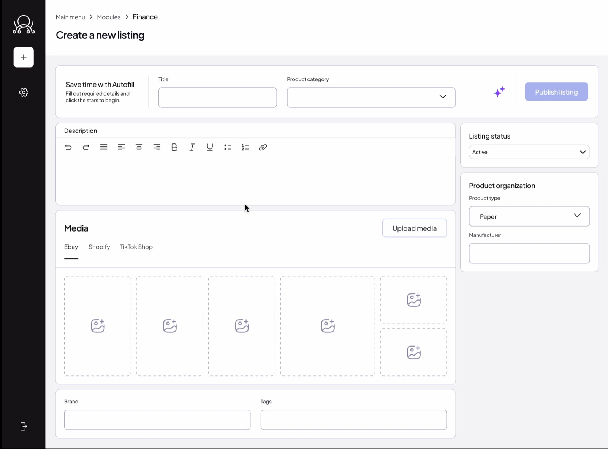
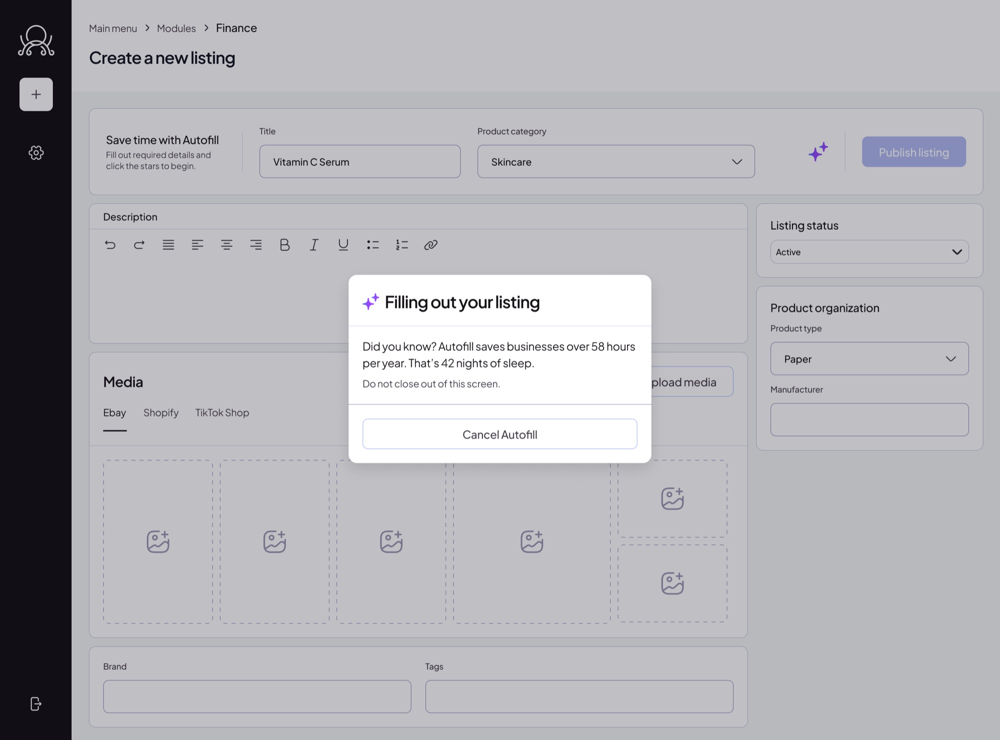
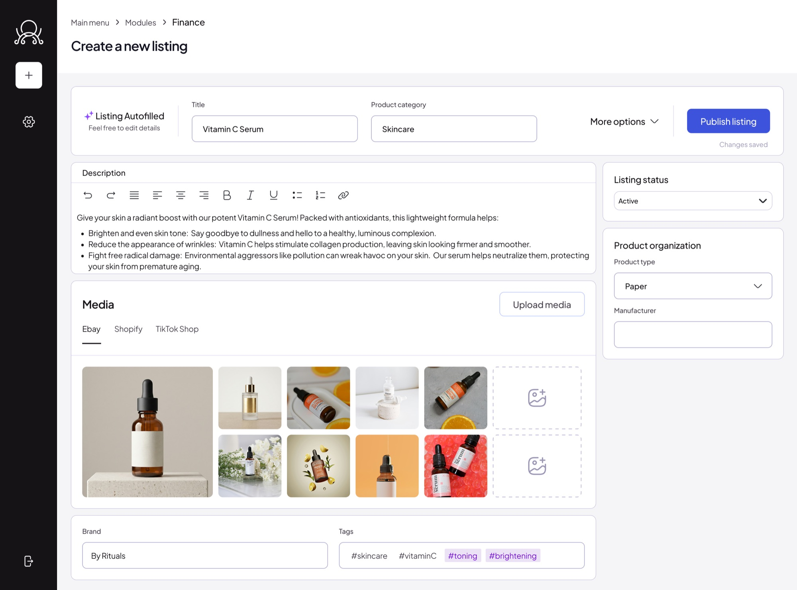
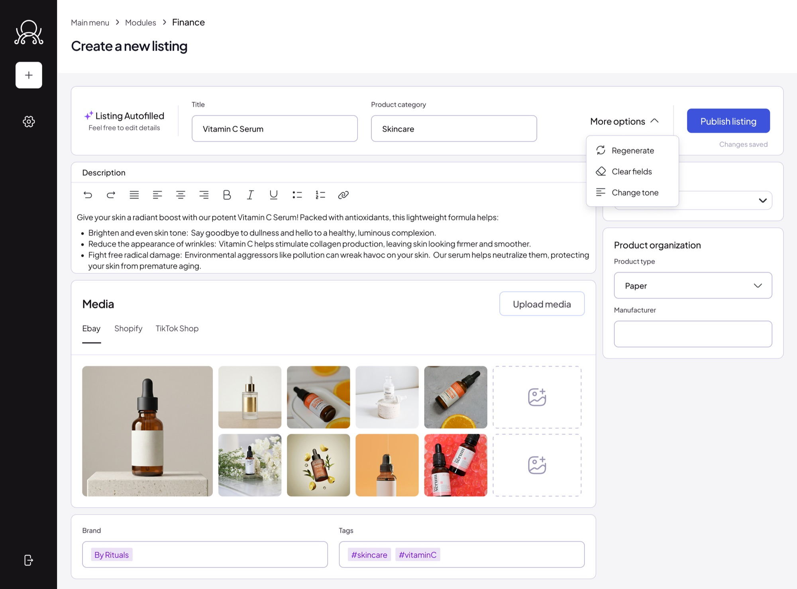
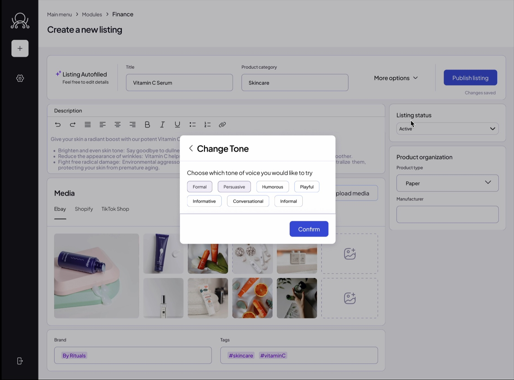
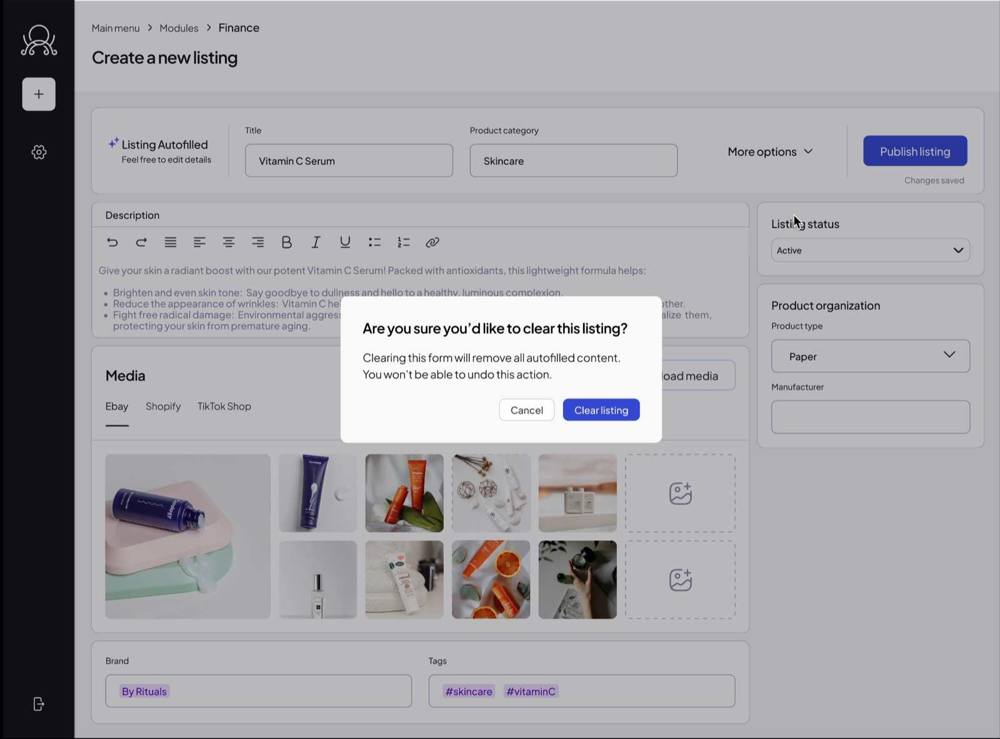
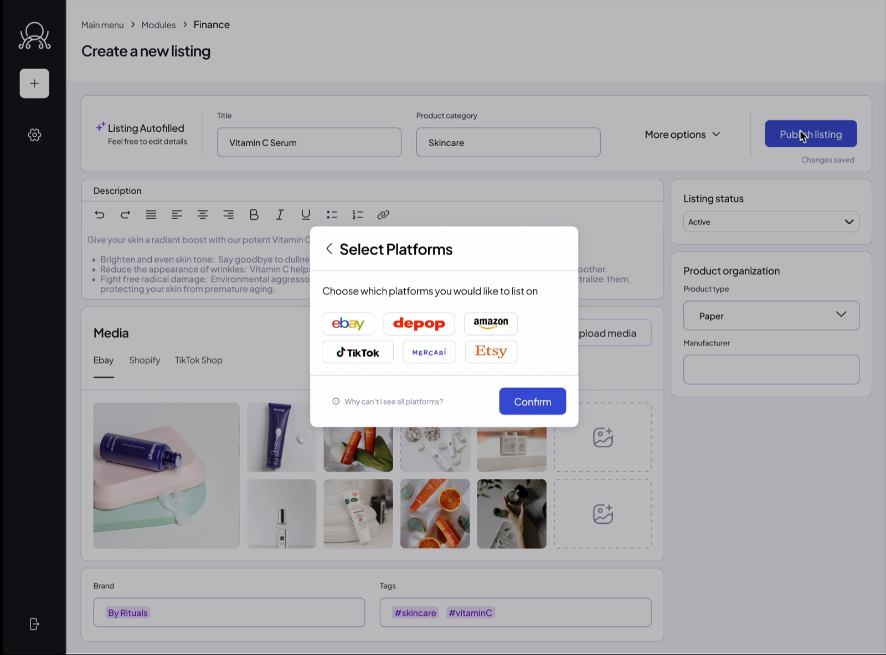
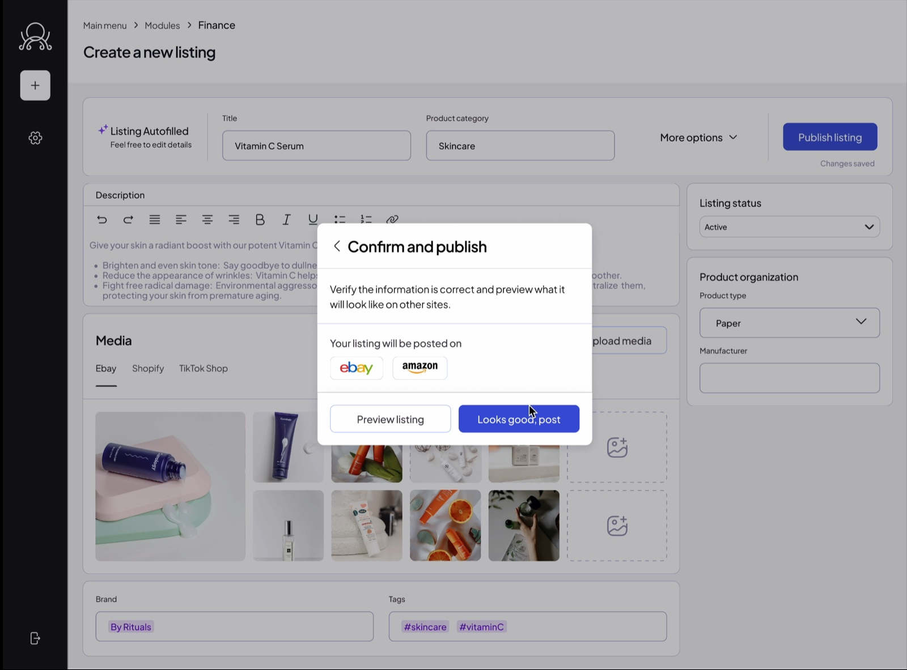

![](data:image/svg+xml,%3Csvg%20xmlns%3D%22http%3A//www.w3.org/2000/svg%22%20viewBox%3D%220%200%201600%201000%22%3E%3Crect%20width%3D%221600%22%20height%3D%221000%22%20fill%3D%22%23FBFBF9%22/%3E%3Crect%20x%3D%22120%22%20y%3D%22200%22%20width%3D%221360%22%20height%3D%222%22%20fill%3D%22%23D5DBE3%22%20opacity%3D%22.6%22/%3E%3Crect%20x%3D%22120%22%20y%3D%22360%22%20width%3D%221360%22%20height%3D%222%22%20fill%3D%22%23D5DBE3%22%20opacity%3D%22.6%22/%3E%3Crect%20x%3D%22120%22%20y%3D%22520%22%20width%3D%221360%22%20height%3D%222%22%20fill%3D%22%23D5DBE3%22%20opacity%3D%22.6%22/%3E%3Crect%20x%3D%22120%22%20y%3D%22680%22%20width%3D%221360%22%20height%3D%222%22%20fill%3D%22%23D5DBE3%22%20opacity%3D%22.6%22/%3E%3Crect%20x%3D%22120%22%20y%3D%22840%22%20width%3D%221360%22%20height%3D%222%22%20fill%3D%22%23D5DBE3%22%20opacity%3D%22.6%22/%3E%3Cpath%20d%3D%22M120%20120%20820%20L270%20760%20L420%20780%20L570%20640%20L720%20600%20L870%20520%20L1020%20470%20L1170%20420%20L1320%20330%20L1470%20300%22%20fill%3D%22none%22%20stroke%3D%22%232448D8%22%20stroke-width%3D%2210%22%20stroke-linecap%3D%22round%22%20stroke-linejoin%3D%22round%22/%3E%3Crect%20x%3D%22120%22%20y%3D%2280%22%20width%3D%22360%22%20height%3D%2228%22%20rx%3D%228%22%20fill%3D%22%23D5DBE3%22/%3E%3C/svg%3E)
Overview
AI autofill turned inventory listing from data entry into a quick review.
OmniSynkAI was an AI startup helping small and mid-sized e-commerce sellers list and sync products across marketplaces like Amazon, eBay, Etsy and Shopify. Its core was the listing page, where sellers filled in every product field by hand, for every platform.
When leadership made AI autofill a core launch feature, I joined the lead designer on its final version. While the listing page itself was being redesigned in parallel, I owned three parts of autofill: where it lives on the page, how sellers tell AI content from their own, and how they give feedback and steer the result.
- Less time to create a listing, on average
- 60%
- More accurate listings
- 20%
- Of testers satisfied with autofill
- 78%
The problem
Sellers were spending their time, or their money, just to list products.
Small business owners grow by selling on as many platforms as they can, which means uploading the same product again and again, each with different requirements. Our UX research team surveyed 456 sellers and ran follow-up interviews.
- Called syncing listings across platforms a nightmare
- 25%
- Of multi-platform sellers hired virtual assistants to keep up
- 27.9%
- Outsourced listing management to third parties
- 25.2%
Listing by hand was slow, led to errors and inconsistencies, and left listings hard to find in search.
The opportunity
Design an autofill feature that brings AI into the listing flow, helping sellers quickly create compelling, search-friendly listings and raising listing quality across the platform.
My role
I joined for the version that would launch.
By the time I joined, the team had already explored three versions of the listing flow. Each one taught us something, and the last left three problems for the launch version to solve.
Cross-listing
Grouped actions in a bento layout, with a separate price optimizer.
LearnedCluttered, and couldn’t scale to data-heavy fields.
Autosynk
Sellers chose AI or manual listing; AI drafted from a few core details.
LearnedSellers wanted more control over what AI wrote.
Autofill tiles
Autofill buttons, form steppers and feedback on each suggestion.
LearnedMany sellers didn’t realize autofill existed.
Autofill for launchMy part
Autofill became a core launch feature. This is where I came in.
GoalMake it findable, clearly marked and easy to steer.
Three open problems became my focus.
Usability feedback on the earlier versions pointed to the same three gaps, each a question I set out to answer.
Placement
Where does autofill live?
Sellers couldn’t find the autofill button, and many didn’t know the feature existed.
Clarity
What did AI write, and what did I?
Autofilled text looked like manual text, and sellers weren’t sure which fields they had to fill in.
Control
How do sellers steer the result?
AI helped, but sellers wanted more say in what it generated.
I worked in three phases.
Each phase answered one question, and each answer shaped the next.
Discover
Where can AI help sellers most?
- Past research, with UX research
- AI’s strengths and limits, with engineering and product
- Desk research
- SWOT of Shopify and Trustana
Conceptualize
What should autofill do, and when?
- User flows for new and returning sellers
- Interactions and triggers
- A feedback loop for AI output
Design
How does it fit the listing page?
- Where autofill lives
- How AI content is marked
- How sellers adjust it
Research
I built on the team’s research, then filled the gaps.
I started with what we already knew. I partnered with UX research to pull the survey and interview findings and spot what was missing, and huddled with engineers and product managers to map what the AI could and couldn’t reliably do. Knowing its limits early kept the design honest.
To fill the gaps, I ran desk research on how people use AI tools, and mapped a SWOT analysis of Shopify’s and Trustana’s AI listing features: Shopify’s interactive feedback loops, and Trustana’s AI enrichment for search and conversion.
Graphic neededYour SWOT diagram for Shopify and Trustana, redrawn
Five findings became five design priorities.
Every priority traces back to a finding, so each decision that followed had a reason behind it.
Finding
Ease of use comes first
Desk research: sellers expect AI tools to feel intuitive from the first click.
Design priority
Easy to find
Make autofill discoverable and simple to start, for new and returning sellers alike.
Finding
Sellers need to see what changed
Desk research: visual cues help people tell AI content from their own.
Design priority
Clearly marked
Highlight everything AI wrote, so sellers know what to check.
Finding
Time is of the essence
Desk research: sellers list in volume, so every extra step costs them.
Design priority
Right place, right time
Bring AI into the key moments of the listing flow, without adding friction.
Finding
Feedback makes the model better
Competitors: feedback loops improve the AI and keep sellers engaged.
Design priority
Learns from feedback
Let sellers react to what AI writes, and use that to improve it.
Finding
Sellers still want control
Competitors: even with AI, sellers can always list by hand.
Design priority
Seller in control
Every field stays editable, and sellers can regenerate, clear or retone at any time.
Placement
Autofill moved to where every listing starts.
In v3, autofill lived in tiles and a sidebar card, apart from the fields it needed, and many sellers never noticed it. My first concept kept a “Try listing with Autofill” card in the sidebar. Mapping it against the flow showed the problem: sellers start a listing at the top, with a title and a category, and that’s exactly what autofill needs.
So I moved autofill into a title bar, right beside those two fields. The sparkle button lights up once both are filled in, the bar explains the value in one line, and it stays fixed as sellers scroll, so the AI controls are always in reach.
Graphic neededYour sidebar concept, shown against the final screen in a before/after slider


Clarity
Sellers can always see what AI wrote.
Earlier versions didn’t separate AI content from manual input, so sellers couldn’t tell what to double-check, or which fields they still had to fill in. I designed a simple visual language for it:
Purple highlights
Everything AI writes, like the brand and tags, is highlighted, so sellers know exactly what to review.
A clear status
After autofill, the title bar reads “Listing Autofilled, feel free to edit details,” inviting edits instead of blind trust.
Only what’s new
When AI rewrites part of a listing, only the new content is highlighted; what sellers already reviewed goes back to plain text.

Control
A feedback loop that fits what the AI can do.
v3 put feedback on every suggestion: browse versions, thumbs up or down, regenerate. It was more than our AI model could reliably support, and more than sellers needed on every field. We reworked feedback around three actions sellers actually want, and I gathered them under one More options menu in the title bar, where they’re always in reach.
Regenerate
Not quite right? Ask the AI for a new draft.
Change tone
Pick from seven tones, from formal to playful, to match the seller’s brand voice.
Clear fields
Start over by hand, with a confirmation first, since it can’t be undone.



Publishing
One listing, published everywhere.
Autofill ends in the team’s publishing flow: sellers pick the marketplaces to list on, preview how the listing will look on each, and post to all of them at once.
Add a title and category
The two required fields
Autofill
One click on the sparkle
Review
AI content highlighted
Adjust
Regenerate, retone or clear
Pick platforms
Where to list
Preview and post
One last check


Impact & reflection
Sellers found autofill, and liked using it.
The team tested the flow with sellers in Maze before launch, and again after the September 2024 soft launch. 78% of testers were satisfied with autofill. Across the whole listing flow, average listing time fell by 60%.
- Less time to create a listing, on average
- 60%
- More accurate listings
- 20%
- Of testers satisfied with autofill
- 78%
OmniSynkAI has since wound down, but the work showed how AI can take on the tedious parts of selling while sellers keep ownership of their listings.
What I learned
Build on what the team knows
Starting from three versions and a 456-seller survey meant I could spend my time on the open problems, not rediscovering old ones.
Design around the model’s limits
Knowing what the AI could reliably do shaped a simpler feedback loop than the one we started with.
Make AI visible, not magic
Sellers trust AI more when they can see what it wrote and change it easily.
![](data:image/svg+xml,%3Csvg%20xmlns%3D%22http%3A//www.w3.org/2000/svg%22%20viewBox%3D%220%200%201600%201000%22%3E%3Crect%20width%3D%221600%22%20height%3D%221000%22%20fill%3D%22%23F6F7F9%22/%3E%3Crect%20x%3D%220%22%20y%3D%220%22%20width%3D%22360%22%20height%3D%221000%22%20fill%3D%22%23FFFFFF%22/%3E%3Crect%20x%3D%2240%22%20y%3D%2260%22%20width%3D%22200%22%20height%3D%2216%22%20rx%3D%228%22%20fill%3D%22%23C9D1DC%22/%3E%3Crect%20x%3D%2240%22%20y%3D%22130%22%20width%3D%22240%22%20height%3D%2212%22%20rx%3D%226%22%20fill%3D%22%23C9D1DC%22%20opacity%3D%22.7%22/%3E%3Crect%20x%3D%2240%22%20y%3D%22186%22%20width%3D%22220%22%20height%3D%2212%22%20rx%3D%226%22%20fill%3D%22%23C9D1DC%22%20opacity%3D%22.7%22/%3E%3Crect%20x%3D%2240%22%20y%3D%22242%22%20width%3D%22200%22%20height%3D%2212%22%20rx%3D%226%22%20fill%3D%22%23C9D1DC%22%20opacity%3D%22.7%22/%3E%3Crect%20x%3D%2240%22%20y%3D%22298%22%20width%3D%22180%22%20height%3D%2212%22%20rx%3D%226%22%20fill%3D%22%23C9D1DC%22%20opacity%3D%22.7%22/%3E%3Crect%20x%3D%2240%22%20y%3D%22354%22%20width%3D%22160%22%20height%3D%2212%22%20rx%3D%226%22%20fill%3D%22%23C9D1DC%22%20opacity%3D%22.7%22/%3E%3Crect%20x%3D%2240%22%20y%3D%22410%22%20width%3D%22140%22%20height%3D%2212%22%20rx%3D%226%22%20fill%3D%22%23C9D1DC%22%20opacity%3D%22.7%22/%3E%3Crect%20x%3D%2240%22%20y%3D%22466%22%20width%3D%22120%22%20height%3D%2212%22%20rx%3D%226%22%20fill%3D%22%23C9D1DC%22%20opacity%3D%22.7%22/%3E%3Crect%20x%3D%22440%22%20y%3D%2260%22%20width%3D%22520%22%20height%3D%2240%22%20rx%3D%228%22%20fill%3D%22%23C9D1DC%22/%3E%3Crect%20x%3D%221300%22%20y%3D%2256%22%20width%3D%22200%22%20height%3D%2248%22%20rx%3D%2210%22%20fill%3D%22%232F5BFF%22/%3E%3Crect%20x%3D%22440%22%20y%3D%22180%22%20width%3D%221060%22%20height%3D%2296%22%20rx%3D%2212%22%20fill%3D%22%23FFFFFF%22/%3E%3Crect%20x%3D%22480%22%20y%3D%22212%22%20width%3D%22420%22%20height%3D%2214%22%20rx%3D%227%22%20fill%3D%22%23C9D1DC%22/%3E%3Crect%20x%3D%22480%22%20y%3D%22240%22%20width%3D%22260%22%20height%3D%2210%22%20rx%3D%225%22%20fill%3D%22%23C9D1DC%22%20opacity%3D%22.6%22/%3E%3Crect%20x%3D%221340%22%20y%3D%22214%22%20width%3D%22120%22%20height%3D%2228%22%20rx%3D%2214%22%20fill%3D%22%232F5BFF%22%20opacity%3D%221%22/%3E%3Crect%20x%3D%22440%22%20y%3D%22300%22%20width%3D%221060%22%20height%3D%2296%22%20rx%3D%2212%22%20fill%3D%22%23FFFFFF%22/%3E%3Crect%20x%3D%22480%22%20y%3D%22332%22%20width%3D%22380%22%20height%3D%2214%22%20rx%3D%227%22%20fill%3D%22%23C9D1DC%22/%3E%3Crect%20x%3D%22480%22%20y%3D%22360%22%20width%3D%22260%22%20height%3D%2210%22%20rx%3D%225%22%20fill%3D%22%23C9D1DC%22%20opacity%3D%22.6%22/%3E%3Crect%20x%3D%221340%22%20y%3D%22334%22%20width%3D%22120%22%20height%3D%2228%22%20rx%3D%2214%22%20fill%3D%22%23C9D1DC%22%20opacity%3D%220.5%22/%3E%3Crect%20x%3D%22440%22%20y%3D%22420%22%20width%3D%221060%22%20height%3D%2296%22%20rx%3D%2212%22%20fill%3D%22%23FFFFFF%22/%3E%3Crect%20x%3D%22480%22%20y%3D%22452%22%20width%3D%22340%22%20height%3D%2214%22%20rx%3D%227%22%20fill%3D%22%23C9D1DC%22/%3E%3Crect%20x%3D%22480%22%20y%3D%22480%22%20width%3D%22260%22%20height%3D%2210%22%20rx%3D%225%22%20fill%3D%22%23C9D1DC%22%20opacity%3D%22.6%22/%3E%3Crect%20x%3D%221340%22%20y%3D%22454%22%20width%3D%22120%22%20height%3D%2228%22%20rx%3D%2214%22%20fill%3D%22%23C9D1DC%22%20opacity%3D%220.5%22/%3E%3Crect%20x%3D%22440%22%20y%3D%22540%22%20width%3D%221060%22%20height%3D%2296%22%20rx%3D%2212%22%20fill%3D%22%23FFFFFF%22/%3E%3Crect%20x%3D%22480%22%20y%3D%22572%22%20width%3D%22300%22%20height%3D%2214%22%20rx%3D%227%22%20fill%3D%22%23C9D1DC%22/%3E%3Crect%20x%3D%22480%22%20y%3D%22600%22%20width%3D%22260%22%20height%3D%2210%22%20rx%3D%225%22%20fill%3D%22%23C9D1DC%22%20opacity%3D%22.6%22/%3E%3Crect%20x%3D%221340%22%20y%3D%22574%22%20width%3D%22120%22%20height%3D%2228%22%20rx%3D%2214%22%20fill%3D%22%23C9D1DC%22%20opacity%3D%220.5%22/%3E%3Crect%20x%3D%22440%22%20y%3D%22660%22%20width%3D%221060%22%20height%3D%2296%22%20rx%3D%2212%22%20fill%3D%22%23FFFFFF%22/%3E%3Crect%20x%3D%22480%22%20y%3D%22692%22%20width%3D%22260%22%20height%3D%2214%22%20rx%3D%227%22%20fill%3D%22%23C9D1DC%22/%3E%3Crect%20x%3D%22480%22%20y%3D%22720%22%20width%3D%22260%22%20height%3D%2210%22%20rx%3D%225%22%20fill%3D%22%23C9D1DC%22%20opacity%3D%22.6%22/%3E%3Crect%20x%3D%221340%22%20y%3D%22694%22%20width%3D%22120%22%20height%3D%2228%22%20rx%3D%2214%22%20fill%3D%22%23C9D1DC%22%20opacity%3D%220.5%22/%3E%3Crect%20x%3D%22440%22%20y%3D%22780%22%20width%3D%221060%22%20height%3D%2296%22%20rx%3D%2212%22%20fill%3D%22%23FFFFFF%22/%3E%3Crect%20x%3D%22480%22%20y%3D%22812%22%20width%3D%22220%22%20height%3D%2214%22%20rx%3D%227%22%20fill%3D%22%23C9D1DC%22/%3E%3Crect%20x%3D%22480%22%20y%3D%22840%22%20width%3D%22260%22%20height%3D%2210%22%20rx%3D%225%22%20fill%3D%22%23C9D1DC%22%20opacity%3D%22.6%22/%3E%3Crect%20x%3D%221340%22%20y%3D%22814%22%20width%3D%22120%22%20height%3D%2228%22%20rx%3D%2214%22%20fill%3D%22%23C9D1DC%22%20opacity%3D%220.5%22/%3E%3C/svg%3E)